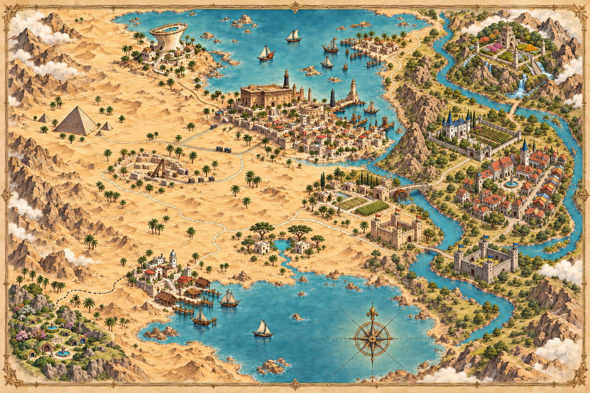

循着河流与古道，走进一个尚未写完的世界。

越过砂岩城墙，沿着河流，飞向四季永驻的山巅。
十五处远方，沿河流与古道相连。
正在准备阿卡迪亚的三维世界…
十九幅风景，一份持续生长的世界设定。
把想象写在页边，下一版由此开始。
每条建议都保留地点、图片版本与标记位置。正在连接本地手札…
草原要塞临河，赤砂关移至对岸；采石场调整为浅层下挖；沙德兰北向远景改为沙地与皇都。所有新概念均记录取景朝向，逐步校验相邻地点的可视关系。